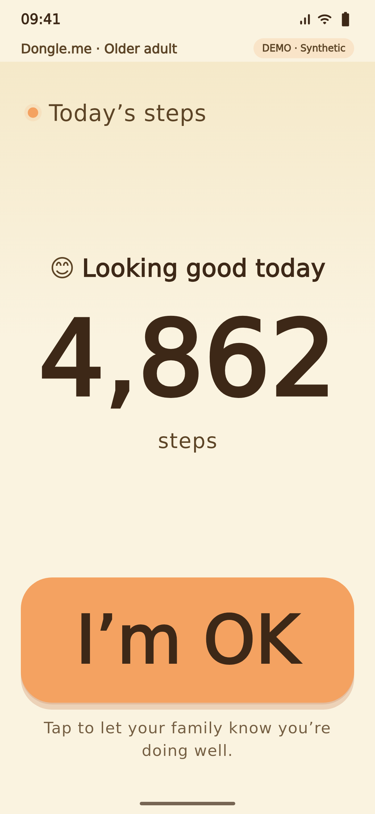
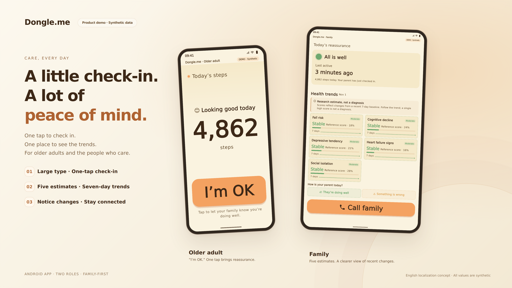
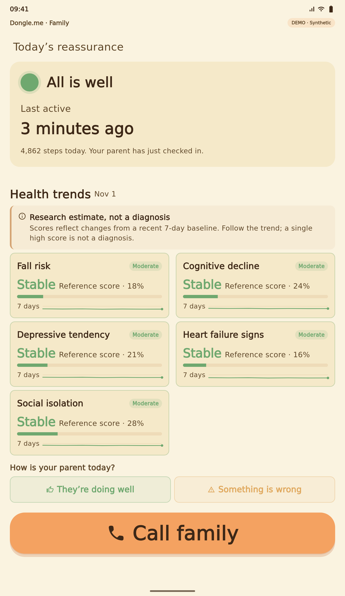

Older adult
01

PROJECT WORK SAMPLE · ANDROID CARE PROTOTYPE
A one-tap check-in for older adults. A separate view of recent changes for their families. Dongle.me uses information bottleneck theory as a foundation for deciding which signals matter and how much detail each role needs.
This public work sample uses synthetic data only. English localization and bilingual switching are proposed features for a future Android release.
TRY IT IN YOUR BROWSER
Tap “I’m OK” to preview confirmation. Switch the family scenario to compare recent trends. Scroll inside either screen to explore.


Ready to explore. All values are synthetic.
Screenshot-based walkthrough. Check-ins and scenario changes happen only in this page; no notifications, calls, feedback or health data are sent. These are research estimates, not diagnoses or calibrated disease probabilities.
THE RESEARCH IDEA
Keep the information relevant to a task while compressing the input. In care, the design question becomes: which changes help a family decide to check in, and which details add burden?
Activity and changes over time.
Preserve information relevant to each target.
Five estimates, rather than one overall score.
The supplied Flutter excerpt explicitly refers to an “IB-v4” design and five independent targets: falls, cognitive decline, depressive tendency, heart failure signs and social isolation. Its interface separates the older adult’s simple check-in from the family’s trends and confidence indicators.
This diagram explains the project’s theory framing. The public bundle contains UI excerpts and fixed synthetic fixtures; it does not include a trainable information bottleneck model or establish predictive accuracy. Information compression alone does not guarantee privacy.
PEOPLE & RESPONSIBLE SHARING
Repository owner: @Hawever-renbo · Project collaborators: @Mark751127 and @marcmliu.
For this test project, the project owner confirms that authorization was obtained from everyone involved. The public work sample contains synthetic values and excludes personal test records and consent documents.
Individual responsibilities are not specified in the supplied bundle. This work sample credits the collaboration without attributing all work to any one person.